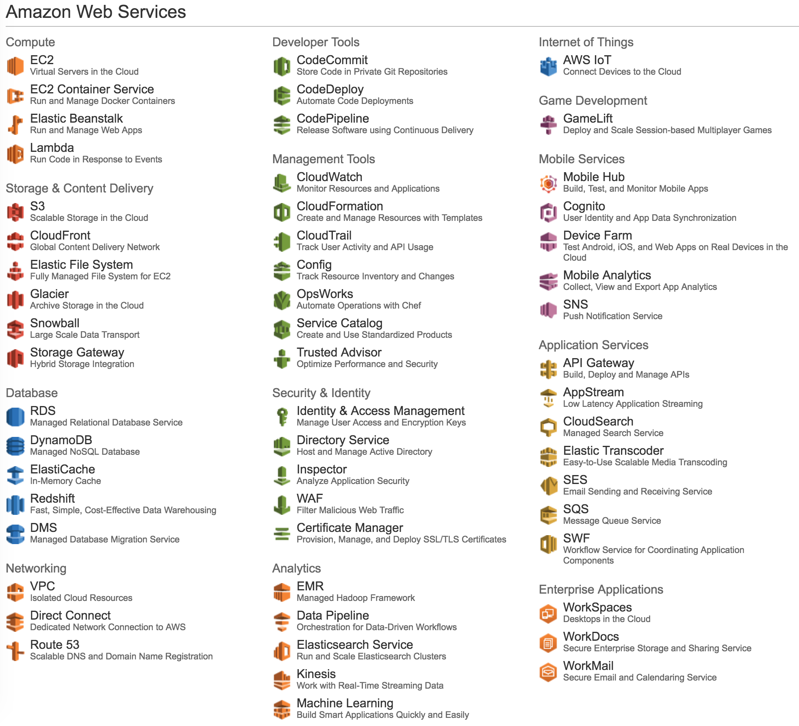

Wat is een van de nadelen van Big Data?
Een van de nadelen van Big Data is dat er heel erg veel data is dat verwerkt moet worden, dit betekent dus dat:
- Je kunt geen traditionele databases gebruiken.
- Je kunt deze data niet op 1 computer verwerken.
- Je moet goed uitkijken hoe je met jouw data omgaat.
Gelukkig bestaan er velen verschillende opties voor het oplossen van deze problemen, en voor het uitvinden van hoe een van deze opties met deze problemen kan omgaan heb ik de gastles gevolgd van Dick Eimers over het gebruik van AWS voor Java.
Terwijl de gastles gaat over het gebruik van AWS in Java kan deze gastles ook gebruikt worden voor het verwerken van Big Data in Java met AWS.
Amazon en AWS
Laten we het eerst hebben over AWS, AWS staat voor Amazon Web Services en is een grote groep van tools die Amazon aanbiedt voor gebruik.
De kosten voor hun tools zijn gevarieerd gebaseerd op hoeveel de tool gebruikt wordt en hoeveel data er langs de tool gaat, als je de tool niet gebruikt kost het ook geen geld.
 Een lijst van bijna alle tools die zij hebben.Het belangrijke aan deze tools is dat deze serverless zijn (Servers hoef jij niet te hosten voor de tools), ze automatisch meer hardware aanbieden gebaseerd op de vraag (De tool zal altijd goed werken), en ze altijd 24/7 beschikbaar zijn.
Dit betekent dus ook dat vaak alles geregeld wordt door Amazon en niet door een developer zelf, dit maakt het makkelijk om een tool te maken die kan omgaan met Big Data zonder dat er veel geld of tijd erin gestopt hoeft te worden. Voor sommige tools hoef je niet eens iets te coderen maar kan het al gewoon werken via de AWS Dashboard.
Hoe helpt AWS met het omgaan van Big Data?
Voor het omgaan met Big Data hebben wij eerst een plek nodig om deze data op te slaan, hiervoor kunnen we de tool AWS Data Lake gebruiken. Deze Data Lake kan omgaan met beide statische en real-time data en verbindt gelijk met verschillende Big Data gefocuste tools.

Een van deze Big Data gefocuste tools dat ook erg belangrijk is, vooral sinds je de GDPR-regels moet volgen in Europa, is de DIDL (De-Identified Data Lake). Deze zorgt ervoor dat jij jouw ingeladen data al gelijk kunt omvormen om GDPR-regels te volgen wanneer je met jouw data omgaat.
Wat je gelijk daarna kunt gebruiken is hun toolset genaamd Amazon Kinesis, deze geeft jouw Big Data omgeving de mogelijkheid geeft om jouw data te analyseren en jou allemaal verschillende belangrijke data teruggeeft uit het grote aantal data die je normaal moeilijk kunt begrijpen.
Het type data hoeft niet eens alleen maar tekst of nummerdata te zijn maar kan ook bestaan uit video en fotodata, deze kunnen dan geanalyseerd worden met de velen verschillende machine-learning tools die Amazon ook aanbiedt aan hun klanten.
Bijvoorbeeld, zij hebben een tool die het mogelijk maakt om automatisch met machine-learning erachter te komen wat er op een bepaalde foto staat en deze data gelijk weer in de data storage op te slaan, dit kan gedaan worden met maar 1 to 3 extra lijnen code.
Wat AWS jou dus kan aanbieden voor Big Data is dat jij zeer gemakkelijk dashboards kunt creëren die real-time data kunnen omvormen en predicties kunnen maken voor een lage prijs, zonder veel te hoeven coderen en zonder je zorgen te hoeven te maken dat jouw servers platliggen omdat er te veel data gestuurd wordt.
Amazon heeft mij laten zien dat zij weten wat zij doen en ik raad velen van hun tools aan voor gebruik.
Bedankt voor het lezen, de websites waar je meer hierover kunt lezen zijn: